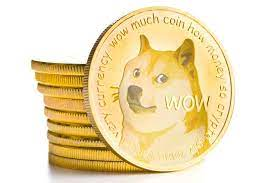

Criptomonedas
Dogecoin
 Como todas las criptomonedas, dogecoin es una moneda digital que puede comprarse y venderse como una inversión y gastarse como dinero.
Aunque cada cripto es única, dogecoin comparte algunas similitudes con sus compañeras más conocidas (su código está basado en el guión de litecoin, por ejemplo). Pero tiene un par de diferencias clave.
A diferencia de bitcoin, que ha fijado en 21 millones la cantidad de monedas disponibles en el mercado, dogecoin tiene 129.000 millones de monedas en circulación y seguirá poniendo a disposición nuevos bloques de monedas para minar cada año.
La criptomoneda Dogecoin fue creada por el programador y antiguo ingeniero de IBM Billy Markus, natural de Portland, Oregon, quien originalmente intentaba juguetear con una criptodivisa ya existente llamada «Bells», basada en el Animal Crossing de Nintendo, con la esperanza de alcanzar una base de usuarios más amplia que la de los inversores que crearon el Bitcoin, y algo que no estuviera involucrado con la controvertida historia detrás de Bitcoin.
Jose D Castro L, Maracaibo, Venezuela